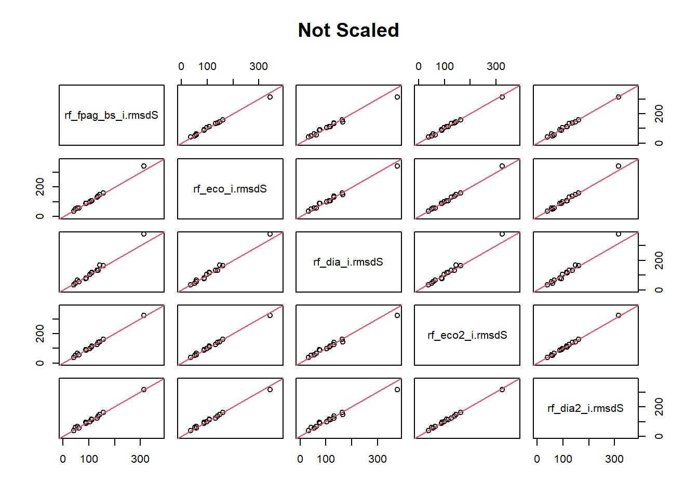

All of the imputations were run on the clipped set of references, w/ 2.5% of extreme values removed.
Copying in code from the last docs
Setting up to run imputations
Breaking FPAG into F, P, A & G
rf_f.p.a.g is that imputation.
rf_fpag_bs is the same, but bootstrapped
Regular RF has an out-of-bag error, I wanted to see how different it was bootstrapped
Both use the same three quarters of rows as references, but BS samples from them.
Splitting it was a mixed bag. For major species and rare groups, it was mixed.
No overall increase in accuracy
Major spp, rmsd 3 of 11 have rmsd greater than sd.
OOB error for UN-bootstrapped one was about .25
OOB error for bootstrapped one was about .1
Variable importance is scaled, every run different, but
BA and SDI are always good predictors, CC is okay.
From fpag, f, a and g are bad ones. Aspect, physcldc and sometimes slope are medium to bad
Decreasing OOB error didn’t affect rmsd
Everything after rf_f.p.a.g was run bootstrapped.
Eco-region and large tree DBH as predictors:
For rmsd, Eco-region(rf_eco) and species DBH(rf_dia) were mostly the same as the others.
The dbh run was done with sum of each species’ DBH per subplot. The three largest DBH per plot were used.
I considered trying it as DBH per tree.
493 subplots didn’t have major overstory species. Then 493 were removed by yai.
Removing negative value predictors.
I ran the eco and dia imputations again, but with the most negative predictors from yaiVarImp removed. Both have the form rf_…2
They were no better for rmsd
Dia2 was the best for OOB error at 0.10554326 0.08814208 0.09304551 for the yrf variables (‘Max_SP’, ‘sp_max_TD’, ‘total_TD’)
Removing negatively important variables reduces OOB, but not rmsd.
OOB
Notes
Brieman paper, generalization error, classifier strength and dependence are computed. These are called out-of-bag estimates
A bound for the mean squared generalization error is derived that shows that the decrease in error from the individual trees in the forest depends on the correlation between residuals and the mean squared error of the individual trees.
Generalization error:
\[
PE^* \ = \ P_{X,Y}(mg(X,Y) < 0)
\] Where X and Y are the training sets from the random draw and margin(mg) measures the extent to which the average number of votes at X, Y for the right class exceeds the average vote for any other class. The larger the margin, the more confidence in the classification.
The generalization error is the probability in x & y that on average RF picks the right class. Large mg means a more confident classification.
I should use all of the data since I am now using bootstrap for all rfs.
I would like to read more about is using the Y variables while refining the trees. I have been using y values that are from the St.Joe example. Those might not be the best depending on how RF uses them. They do not make a difference for msn, so I didn’t have a reason to question them until now.
Apr 9th, pulling in new predictors.
Laurel’s email
compare model output to the Inland Empire estimates for the areas where your model and the Inland Empire model overlap.
It seems like we have a lot of data, but with high variability and many predictors, we’re probably still data-limited.
Did you exclude the few plots that were previously burned? (I’m thinking we should constrain this dataset to undisturbed plots or, at least, non-fire disturbance since that has a strong impact on regeneration.)
Maybe an outlier analysis?
Variable importance will be useful for refining our predictor set.
Check the out-of-bag error rate.
Predictors:
We know that regeneration depends on microsite conditions (microclimate, soil type, shelter), seed source, precipitation in the 1-5 years following seed dispersal, facilitative interactions (mycorrhizae, shelter from other trees and plants) and competitive interactions (especially competition with understory species for water and nutrients).
Suggestions:
Simplify FPAG, which would give us more plots per group and alleviate the data limitation issues.
Breaking FPAG into separate categories, so that the random forest model knows which categories are similar.
Species-specific basal area, because this would tell the model something about the mature trees in the stand. I would remove total basal area as a predictor.- I could, but it is our best predictor at the moment.
One benefit of creating models separately for each FPAG would be that you can tailor the predictor set to the FPAG, so you could use just the species basal area predictors for the most abundant species in FPAG.
Modeling regeneration density within ecoregion.
Only model the most abundant species.
Predict species-specific regen density within FPAGs, with separate FPAG classes as predictors (conifer/hardwood, dominant overstory, dominant understory), and we restrict this to the species comprising, say, 80% of the regeneration in a given FPAG? (We could experiment with this % threshold, which is a hyperparameter.)
Before we eliminate species, we should consider whether they’re slow- or fast-growing species and estimate how this limitation would impact our imputed seedling counts.
We could use the survey time and approximate plot location to get climate data and look at things like maximum growing season temperature, climate water deficit, and growing season precipitation. Kim mentioned that head load index is a strong predictor, especially by species. I suspect some of these variables are more important for regeneration after a fire, because regen in a closed forest benefits from the microclimate therein.
Stochasticity:
As much as I love the idea of modeling probability and counts separately and to do this with the k nearest neighbors, the preceding suggestions might be higher priority if we’re limited on time.
We need to compare the predicted regeneration densities for k nearest neighbors to the target and see, for each FPAG, conservatively:
how many nearest neighbors are similar to the target and how quickly they diverge. Then we can determine, for each FPAG, how many k nearest neighbors to use for estimating either regen probability or counts.
For using the # of neighbors that have any regen/total neighbors to get probability of regen:
We generate a random number between 0 and 1 and, if that number is lower than the probability of regen, regen occurs.
We then draw a random neighbor from the set of k neighbors.
Setup
Code
# Data tidying and accesslibrary(tidyverse, quietly = T)library(RSQLite)# library(readxl)# library(writexl)# yaImpute and related library(yaImpute)library(vegan)library(randomForest)# plots and tableslibrary(esquisse)library(knitr)# No sci-notation. options(scipen =999)# list of variables to keep. I like to clean the env. # load("dfs_0403/KEEP.Rdata")# rm(list = ls()[!ls() %in% KEEP])# These are the plots of the top 50 fpags. 22721 rows, 6 preds plus fpa and physclcdload("dfs_0403/fpas.Rdata")# Best imputation so far, all predictors on clipped data. load("dfs_0403/rf_all_ref2_i.Rdata")# original imp_dataload("dfs_0403/imp_data.Rdata")# fpas 2, clipped imp_dataload("dfs_0403/fpas_TD2900.Rdata")# species prevelance by FPAG. load("dfs_0403/sp_prev_df.Rdata")# species prevalence over all FPAGsload("dfs_0403/sp_prev3.Rdata")imp_data_FPA <- imp_data |>mutate(fpa =str_sub(FPAG, 1, 3) )imp_data_FPA <- imp_data_FPA |>mutate(prevalent =rowSums(imp_data_FPA[,sp_prev3[sp_prev3$prev =="Prev",]$spp]),common =rowSums(imp_data_FPA[,sp_prev3[sp_prev3$prev =="Comm",]$spp]),uncommon =rowSums(imp_data_FPA[,sp_prev3[sp_prev3$prev =="Uncom",]$spp]),rare =rowSums(imp_data_FPA[,sp_prev3[sp_prev3$prev =="Rare",]$spp]),total_TD =rowSums(imp_data_FPA[grep("_TD", names(imp_data_FPA))])) |>select(-sp_prev3[sp_prev3$prev =="Rare",]$spp, -sp_prev3[sp_prev3$prev =="Uncom",]$spp, -sp_prev3[sp_prev3$prev =="Comm",]$spp,-sp_prev3[sp_prev3$prev =="Prev",]$spp) #imp_data_FPA <- imp_data_FPA |>relocate(fpa, .after = FPAG)imp_data_FPA <- imp_data_FPA |>relocate(PHYSCLCD, .before = FPAG)fpas <- imp_data_FPA# Removing the fpags with less than 120 plots. # This needs to happen for RF. Must be less than 53. t <- fpas |>group_by(FPAG) |>summarise(n =n()) |>arrange(desc(n)) |>filter(n >64)keep <- t$FPAGfpas <- fpas |>filter(FPAG %in% keep)# I am not sure this is the way to set levels. fpas$FPAG <-factor(fpas$FPAG, levels = keep)fpas$fpa <-as.factor(fpas$fpa)fpas$PHYSCLCD <-as.factor(fpas$PHYSCLCD)rm(keep, t)KEEP <-ls()
The current version of fpas is different from the last one. I used the more thorough version of species prevalence to make it. I should probably stop doing that, it helps read the plots, but it is proving to eat up time. Plus, it makes the comparisons difficult when they don’t match.
Pulling apart FPAG
I am going to proceed with fpas2 becuase I want to easily be able to compare with the 2nd ref run. That was the best imputation so far.
# fpas2 <- fpas |> filter(total_TD < 2900)# fpas3 is fpas2 but with f.p.a.g. refs2 <-rownames(fpas3[1:(3*nrow(fpas2)/4),])x <- fpas3 |>select(STANDPLOT_CN, CC, BA, SDI, ELEVFT, SLOPE, ASPECT, PHYSCLCD, f, P, A, G)x <-remove_rownames(x)x <-column_to_rownames(x, "STANDPLOT_CN")# names(fpas3)yfull <- fpas3 |>select(1, 11:24)# That is the same number of rows as the 95% of the data from before. y <- yfull[refs2,]y <-remove_rownames(y)y <-column_to_rownames(y, "STANDPLOT_CN")# can't have factors in msn or mal# x6 <- x |> select(-FPAG, -PHYSCLCD)k =1yrf <-cbind(whatsMax(y[ ,1:(ncol(y)-1)]), y[, ncol(y)])names(yrf) <-c('Max_SP', 'sp_max_TD', 'total_TD')
Imps
Code
# Separating this because it takes a long time and I don't want to run in by accident. rf_f.p.a.g <-yai(x = x, y = yrf, method ="randomForest", k = k)save(rf_f.p.a.g, file ="imps_0402/rf_f.p.a.g.Rdata")rf_fpag_bs <-yai(x = x, y = yrf, method ="randomForest", k = k, bootstrap = T)save(rf_fpag_bs, file ="imps_0402/rf_fpag_bs.Rdata")
I do not know how to make a comparison for the out of bag error. I could compare apples to apples here, but I don’t have these values printed for previous runs.
ggplot(stack(bsx)) +aes(x = values, y = ind, fill = ind) +geom_boxplot()+xlim(-2,2)+labs(title ="Bootstrap")
From the Brieman paper,
For guidance, internal estimates of the generalization error, classifier strength and dependence are computed. These are called out-of-bag estimates and are reviewed in Section 4.
3.1:
Assume a method for constructing a classifier from any training set. Given a specific training set T, form boostrap training sets Tk, (a subset of 2/3 of T) construct classifiers h(x, Tk) and let these vote to form the bagged predictor.
For each y, x in the training set, aggregate the votes only over those classifiers for which Tk does not containing y, x. Call this the out-of-bag classifier.
Then the out-of-bag estimate for the generalization error is the error rate of the out-of-bag classifier on the training set
From a video on youtube, the out-of-bag error is the proportion that were incorrectly classified.
If that’s the case, then it is odd that jumping form 20% incorrectly classified to 10% didn’t really reduce the difference in predicted vs observed y values, rmsd.
Moving on
I can run FPA again, it didn’t do much last time. So, I am not inclined to try again, but it’s pretty easy and I can’t compare that one to these. Doing fpa would make more sense if I was still splitting off a single group to test. If splitting to letters didn’t do it, then changing to fpa won’t either.
I could add eco-region, I’ve been wanting to do that one.
eco-region
Code
con <-dbConnect(RSQLite::SQLite(), "./attempt_032524.db")plots <-dbGetQuery(con, "select * from fvs_plotinit_plot")trees <-dbGetQuery(con, "select * from fvs_treeinit_plot")plants_ref <-dbGetQuery(con, "select * from plants_ref")dbDisconnect(con)
yfull <- fpas4 |>select(1, 16:ncol(fpas4))# That is the same number of rows asfpas4# That is the same number of rows as the 95% of the data from before. names(yfull)
y <- yfull[refs,]y <-remove_rownames(y)y <-column_to_rownames(y, "STANDPLOT_CN")# can't have factors in msn or mal# x6 <- x |> select(-FPAG, -PHYSCLCD)k =1yrf <-cbind(whatsMax(y[ ,1:(ncol(y)-1)]), y[, ncol(y)])names(yrf) <-c('Max_SP', 'sp_max_TD', 'total_TD')
Imp
Code
# Separating this because it takes a long time and I don't want to run in by accident. # rf_eco <- yai(x = x, y = yrf, method = "randomForest", k = k, bootstrap = T)# save(rf_eco, file = "imps_0402/rf_eco.Rdata")
I had this data pulled at one point. It was in my first attempt at RF.
There’s a few options here, I could run this by species and BA. Meaning columns for two most prevalent species and columns for thier BA.
I could run it with every species in the overstory as spp_BA. Looking at the plots without rare trees on the Visualization tab, it looks like at most there are three dominant species per FPAG. That is not to say a given plot doesn’t have a more even mix, but at the FPAG level, that seems to do fine.
The issue here is that FVS_Ready has tpa, dia, and height, but not BA. I can use dbh, but at the plot level, it’s either average or max BA.
Code
# Joining the fvs ready tree table to my standst <-left_join(select(fpas4, STANDPLOT_CN), trees, by ="STANDPLOT_CN")# filtering out seedlings and saplingstr_large <- t |>filter(!startsWith(TREE_CN, "S") & DIAMETER >5)# tpa and dia sums per species on each plott2 <- tr_large |>group_by(STANDPLOT_CN, SPECIES) |>summarise(TPA =sum(TREE_COUNT),dia =sum(DIAMETER),dia_per_tr = dia/TPA)
`summarise()` has grouped output by 'STANDPLOT_CN'. You can override using the
`.groups` argument.
Code
# totals of eachtt <- t2 |>group_by(STANDPLOT_CN) |>summarise(tot_TPA =sum(TPA), tot_dia =sum(dia))# Adding totals to get percentst <-left_join(tt, t2, by ='STANDPLOT_CN') |>mutate(pcnt_tpa = (TPA/tot_TPA)*100,pcnt_dia = (dia/tot_dia)*100) |>select(-tot_TPA, -tot_dia)# getting plant codesplants_ref <- plants_ref |>mutate(SPECIES =as.character(SPCD))t <-left_join(t, plants_ref |>select(SPECIES, SYMBL), join_by(SPECIES)) |>select(-SPECIES)ttt <- t |>head(n =3)t |>head(n =3)
I think I want to maximize the diameter per tree, but the data is set so that the largest trees count as .99, and middle size trees count as 6.06. There is probably a way to get this perfect, but I am not sure right now. Without grouping the diameters into classes, there’s no good way to separate 10 trees with diameter of 6 from one tree with a diameter of 60. Different species are going to have different diameters at maturity. This is only to get RF to know what the major species are there. I am going with diameter.
Code
n_distinct(tr_large$TREE_COUNT)
[1] 3
Code
unique(tr_large$TREE_COUNT)
[1] 6.018046 0.999188 74.965282
There are no records in tr_large that counted multiples of a given species with the same dimensions. Those 74.9’s are weird, they should only be counted like that under 5in in diameter.
Code
t <- t |>group_by(STANDPLOT_CN) |>arrange(desc(dia)) |>slice(1:3) |>select(STANDPLOT_CN, dia, SYMBL)t |>head()
STANDPLOT_CN
dia
SYMBL
12964130010497_1
93.3
ABGR
12964130010497_1
91.4
PIPO
12964130010497_1
26.3
LAOC
12964130010497_2
118.6
PIPO
12964130010497_2
47.9
ABGR
12964130010497_3
110.8
ABGR
Code
fpa_cn <- fpas4 |>select(STANDPLOT_CN)tt <-left_join(fpa_cn, t, by ="STANDPLOT_CN")sum(is.na(tt$SYMBL))
[1] 493
493 rows are empty, those are in fpas4, but don’t have major overstory species? This is built off of fpas2, that already has the empty total_TDs removed. So, these plots have seedlings but not large trees.
Code
t3 <- tt |>pivot_wider(names_from = SYMBL, values_from = dia, values_fill =0, names_glue ="{SYMBL}_{'dia'}")fpas5 <-left_join(fpas4, t3, by ="STANDPLOT_CN")
Code
# fpas2 <- fpas |> filter(total_TD < 2900)# fpas3 is fpas2 but with f.p.a.g. refs <-rownames(fpas5[1:(3*nrow(fpas5)/4),])preds <-names(fpas5)[2:15]preds <- preds[!preds %in%c("FPAG", "fpa")]dias <- t3 |>names()preds <-append(preds, all_of(dias[2:39]))
Warning: Using `all_of()` outside of a selecting function was deprecated in tidyselect
1.2.0.
ℹ See details at
<https://tidyselect.r-lib.org/reference/faq-selection-context.html>
Code
x <- fpas5 |>select(STANDPLOT_CN, preds)
Warning: Using an external vector in selections was deprecated in tidyselect 1.1.0.
ℹ Please use `all_of()` or `any_of()` instead.
# Was:
data %>% select(preds)
# Now:
data %>% select(all_of(preds))
See <https://tidyselect.r-lib.org/reference/faq-external-vector.html>.
Code
# x <- left_join(x, t3, by = 'STANDPLOT_CN')x <-remove_rownames(x)x <-column_to_rownames(x, "STANDPLOT_CN")names(x)
yfull <- fpas5 |>select(-preds, -c(FPAG, fpa))# That is the same number of rows asfpas4# That is the same number of rows as the 95% of the data from before. names(yfull)
y <- yfull[refs,]y <-remove_rownames(y)y <-column_to_rownames(y, "STANDPLOT_CN")# can't have factors in msn or mal# x6 <- x |> select(-FPAG, -PHYSCLCD)k =1yrf <-cbind(whatsMax(y[ ,1:(ncol(y)-1)]), y[, ncol(y)])names(yrf) <-c('Max_SP', 'sp_max_TD', 'total_TD')
Imp
Code
# Separating this because it takes a long time and I don't want to run in by accident. rf_dia <-yai(x = x, y = yrf, method ="randomForest", k = k, bootstrap = T)save(rf_dia, file ="imps_0402/rf_dia.Rdata")
yfull <- fpas4 |>select(1, 16:ncol(fpas4))# That is the same number of rows asfpas4# That is the same number of rows as the 95% of the data from before. yvars <-names(yfull)names(yfull)
y <- yfull[refs,]y <-remove_rownames(y)y <-column_to_rownames(y, "STANDPLOT_CN")# can't have factors in msn or mal# x6 <- x |> select(-FPAG, -PHYSCLCD)k =1yrf <-cbind(whatsMax(y[ ,1:(ncol(y)-1)]), y[, ncol(y)])names(yrf) <-c('Max_SP', 'sp_max_TD', 'total_TD')
Code
# Separating this because it takes a long time and I don't want to run in by accident. # rf_dia2 <- yai(x = x, y = yrf, method = "randomForest", k = k, bootstrap = T)# save(rf_dia2, file = "imps_0402/rf_dia2.Rdata")
t_ns <-compare.yai(rf_fpag_bs_i, rf_eco_i, rf_dia_i, rf_eco2_i, rf_dia2_i, scale = F)t <-compare.yai(rf_fpag_bs_i, rf_eco_i, rf_dia_i, rf_eco2_i, rf_dia2_i)plot(t_ns, main ="Not Scaled")plot(t, main ="Scaled")

Code
yaiVarImp(rf_eco2, ylim =c(-2,2))
Code
yaiVarImp(rf_dia2, ylim =c(-2,2))
Interesting that the scaled importance goes down per variable when there are fewer bad ones. I guess because it’s scaled. Striking difference between all other variables and SDI/BA.
I think that has something to do with the yrf variables used when running the yai. They do not make it clear how they are calculating oob. Even in the Briemen paper, it’s a hazy.
rmsd is the RMS between the targets and the references + error from measurement and error that is naturaly between the variables. For each y variable, the difference between the imputed and observed values.